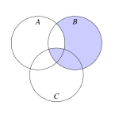
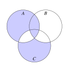
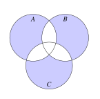

1 Teoría de conjuntos
Ejercicio 1.1 Dado el conjunto universo de los números de un dado \(\Omega=\{1, 2, 3, 4, 5, 6\}\) y los subconjuntos correspondientes a sacar par en el lanzamiento de un dado \(A=\{2, 4, 6\}\) y sacar menos de 5 en el lanzamiento de un dado \(B=\{1, 2, 3, 4\}\), calcular e interpretar los siguientes conjuntos:
- \(A\cup B\)
- \(A\cap B\)
- \(\overline A\) y \(\overline B\)
- \(A-B\) y \(B-A\)
- \(A\triangle B\)
- \(\overline{(A\cup B)}\)
- \(\overline{(A\cap B)}\)
- \(A\cup \overline B\)
- \(\overline{\overline A \cap B}\)
¿Qué conjuntos de números en el lanzamiento de un dado serían disjuntos con \(A\)? ¿Y con \(A\cup B\)?
- \(A\cup B = \{1, 2, 3, 4, 6\}\)
- \(A\cap B = \{2, 4\}\)
- \(\overline A = \{1, 3, 5\}\) y \(\overline B = \{5, 6\}\)
- \(A-B = \{6\}\) y \(B-A = \{1,3\}\)
- \(A\triangle B = \{1, 3, 6\}\)
- \(\overline{(A\cup B)} = \{5\}\)
- \(\overline{(A\cap B)} = \{1,3, 5, 6\}\)
- \(A\cup \overline B = \{2, 4, 5, 6\}\)
- \(\overline{\overline A \cap B} = \{2, 4, 5, 6\}\)
Serían disjuntos con \(A\) todos los conjuntos que solo tuviesen alguno de los números \(1\), \(3\) o \(5\), por ejemplo el conjunto \(\{1, 5\}\). El único conjunto disjunto con \(A\cup B\), además del vacío es \(\{5\}\).
Ejercicio 1.2 Expresar con operaciones entre los conjuntos \(A\), \(B\) y \(C\), los conjuntos que se corresponden con las regiones sombreadas en los siguientes diagramas.



- \((B-A)\cup (A\cap B\cap C)\)
- \((A\cup B)\cap \overline{(A\cap C)}\cap \overline{(B\cap C)}\cup (A\cap B\cap C)\)
- \((A\cup B\cup C) - ((A\cap B)\cup (A\cap C)\cup (B\cap C))\)
Ejercicio 1.3 Demostrar gráficamente las leyes de Morgan \(\overline{A\cup B}=\overline A \cap \overline B\) y \(\overline{A\cap B}=\overline A \cup \overline B\).
Ejercicio 1.4 Construir por extensión el conjunto potencia del conjunto de los grupos sanguíneos \(S=\{0, A, B, AB\}\). ¿Cuál es su cardinal?
\[\begin{align*} \mathcal{P}(S)&=\{\emptyset, \{0\}, \{A\}, \{B\}, \{AB\}, \\ & \{0,A\},\{0,B\}, \{0,AB\}, \{A,B\}, \{A,AB\}, \{B,AB\}, \{0,A,B\},\\ & \{0,A,AB\}, \{0,B,AB\}, \{A,B,AB\}, \\ & \{0,A,B,AB\} \} \end{align*}\]
Ejercicio 1.5 Construir el producto cartesiano del conjunto d los grupos sanguíneos \(S=\{0, A, B, AB\}\) y el conjunto de los factores Rh \(R=\{\mbox{Rh}+, \mbox{Rh}-\}\).
\[\begin{align*} S \times R &=\{(0,\mbox{Rh}+), (0,\mbox{Rh}-), (A,\mbox{Rh}+)), (A,\mbox{Rh}-),\\ & (B,\mbox{Rh}+), (B,\mbox{Rh}-), (AB,\mbox{Rh}+), (AB,\mbox{Rh}-) \} \end{align*}\]
Ejercicio 1.6 Demostrar que la relación \(R=\{(x,y)\in \mathbb{Z}^2: x-y \mbox{ es par}\}\) es una relación de equivalencia.
Propiedad reflexiva: \(\forall a\in\mathbb{Z}\) \(a-a=0\) es par, de manera que \(aRa\).
Propiedad simétrica: \(\forall a,b\in\mathbb{Z}\) si \(aRb\) entonces \(a-b\) es par, es decir, existe \(k\in \mathbb{Z}\) tal que \(a-b=2k\). Por tanto, \(b-a=2(-k)\) también es par y \(bRa\).
Propiedad transitiva: \(\forall a,b,c\in\mathbb{Z}\), si \(aRb\) y \(bRc\) entonces \(a-b\) y \(b-c\) son pares, de manera que su suma \(a-b+b-c = a-c\) también es par, y \(aRc\).
Ejercicio 1.7 ¿Cuáles de las siguientes relaciones son relaciones de equivalencia? ¿Cuáles don de orden?
- \(R_1=\{(x,y)\in \mathbb{R}^2: x = y\}\)
- \(R_2=\{(x,y)\in \mathbb{R}^2: x\leq y\}\)
- \(R_3=\{(x,y)\in \mathbb{R}^2: x^2 + y^2 = 1\}\)
- \(R_4=\{(x,y)\in \mathbb{R}^2: x^2 + y^2 \leq 1\}\)
- \(R_1\) es relación de equivalencia.
- \(R_2\) es relación de orden.
- \(R_3\) no es relación de equivalencia ni de orden porque no cumple las propiedades reflexiva y transitiva.
- \(R_4\) es no es relación de equivalencia ni de orden porque tampoco cumple las propiedades reflexiva y transitiva.
Ejercicio 1.8 \(\star\) Para cada uno de los conjuntos siguientes, calcular si existe el supremo, el ínfimo, el máximo y el mínimo.
- \(A=\{1, 2, 3, 4, 5\}\)
- \(B=\{x\in\mathbb{N} : x \mbox{ es par}\}\)
- \(C=\{x\in\mathbb{Q} : 0< x \leq 1\}\)
- \(\sup(A)=5\), \(\inf(A) = 1\), \(\max(A)=5\), \(\min(A)=1\).
- \(\inf(B) = 2\) y \(\min(B)=2\). No existe el supremo ni el máximo porque \(B\) no está acotado superiormente.
- \(\sup(C)=1\), \(\inf(C) = 0\) y \(\max(C)=1\). No existe el mínimo.
Ejercicio 1.9 \(\star\) Dar ejemplos de funciones \(f:\mathbb{Z}\rightarrow \mathbb{Z}\) que cumplan lo siguiente:
- \(f\) es inyectiva pero no sobreyectiva.
- \(f\) es sobreyectiva pero no inyectiva.
- \(f\) no es inyectiva ni sobreyectiva.
- \(f\) es biyectiva y distinta de la función identidad.
- \(f(x)=2x\)
- \(f(x)=\lfloor x/2\rfloor\).
- \(f(x)=x^2\)
- \(f(x)=x+1\)
Ejercicio 1.10 \(\star\) Dadas las siguientes funciones de \(\mathbb{R}\) en \(\mathbb{R}\), estudiar cuáles son inyectivas y cuáles sobreyectivas:
- \(f(x)=x^2\)
- \(g(x)=x^3\)
- \(h(x)=x^3-x^2-2x\)
- \(i(x)=|x|\)
- \(f(x)=x^2\) no es ni inyectiva ni sobreyectiva.
- \(g(x)=x^3\) es biyectiva.
- \(h(x)=x^3-x^2-2x\) es sobreyectiva pero no inyectiva.
- \(i(x)=|x|\) no es ni inyectiva ni sobreyectiva.
Ejercicio 1.11 Demostrar que la composición de dos funciones inyectivas es también inyectiva.
Sean \(f\) y \(g\) dos funciones inyectivas tales que \(\operatorname{Im}(f)\subseteq\operatorname{Dom}(g)\). Veamos que \(g\circ f\) es inyectiva. Supongamos ahora que existen \(a, b\in \operatorname{Dom}(f)\) tales que \(g\circ f(a)=g\circ f(b)\), es decir, \(g(f(a))=g(f(b))\). Como \(g\) es inyectiva, se tiene que \(f(a)=f(b)\), y como \(f\) es inyectiva se tiene que \(a=b\), con lo que \(g\circ f\) es inyectiva.
Ejercicio 1.12 Dados dos conjuntos finitos \(A\) y \(B\), demostrar que \(|A\cup B| = |A|+|B|-|A\cap B|\) y que \(|A\times B|=|A||B|\).
\(A\cup B = (A-B) \cup (B-A)\cup (A\cap B)\) con \(A-B\), \(A\cup B\) y \(B-A\) disjuntos dos a dos, de manera que \(|A\cup B| = |A-B| + |B-A| + |A\cap B|\).
Por otro lado, \(A=(A-B)\cup (A\cap B)\), y \(B=(B-A)\cup (A\cap B)\), de modo que
\[\begin{align*} |A| + |B| - |A\cap B| &= |A-B| + |A\cap B| + |B-A| + |A\cap B| - |A\cap B| \\ &= |A-B| + |B-A| + |A\cap B|, \end{align*}\]
que coincide con el resultado anterior.
Supongamos que \(A=\{a_1,\ldots, a_n\}\) y \(B=\{b_1,\ldots, b_m\}\), de manera que \(|A|=n\) y \(|B|=m\). Para cada elemento \(a_i\in A\) se pueden formar \(m\) pares \((a_i,b_1),\ldots (a_i,b_m)\). Como \(A\) tiene \(n\) elementos, en total se pueden formar \(n\cdot m\) pares, así que \(|A\times B| = n\cdot m = |A||B|\).
Ejercicio 1.13 Dada una función \(f:A\rightarrow B\), demostrar que si \(f\) es inyectiva, entonces \(|A|\leq |B|\), y si \(f\) es sobreyectiva, entonces \(|A|\geq |B|\). ¿Cómo es \(|A|\) en comparación con \(|B|\) cuando \(f\) es biyectiva?
Sea \(f:A\rightarrow B\) inyectiva. Entonces para cualesquiera \(a_1,a_2\in A\) con \(a_1\neq a_2\) se tiene que \(f(a_1)\neq f(a_2)\), por lo que \(|A|\leq |B|\).
Sea \(f:A\rightarrow B\) sobreyectiva. Entonces para todo \(b\in B\) existe \(a\in A\) tal que \(f(a)=b\). Además dos elementos de \(B\) no pueden tener la misma preimagen porque entonces \(f\) no sería una función, por lo que \(|A|\geq |B|\).
De lo anterior se deduce que si \(f\) es biyectiva, entonces \(|A|=|B|\).
Ejercicio 1.14 Dados dos conjuntos finitos \(A\) y \(B\) con \(|A|=n\) y \(|B|=m\). ¿Cuántas funciones distintas se pueden construir de \(A\) a \(B\)? ¿Cuántas funciones sobreyectivas se pueden construir suponiendo que \(n\geq m\)? ¿Y cuántas funciones inyectivas suponiendo que \(n\leq m\)?
Se pueden construir \(m^n\) funciones distintas, \(m^{m-n}\) funciones sobreyectivas y \(\frac{m!}{(m-n)!}\) funciones inyectivas.
Ejercicio 1.15 Tomando el conjunto de los números naturales \(\mathbb{N}\) como conjunto universo, dar un ejemplo de un subconjunto infinito cuyo complemento también sea infinito.
\(A=\{x\in\mathbb{N}: x \mbox{ es par}\}\) es infinito y \(\overline A=\{x\in\mathbb{N}: x \mbox{ es impar}\}\) también es infinito.
Ejercicio 1.16 Demostrar que todo conjunto infinito tiene un subconjunto infinito numerable.
Sean \(A\) un conjunto infinito. Como \(A\) no es vacío, existe un elemento \(a_1\in A\). Considérese ahora el conjunto \(A_1 = A\setminus \{a_1\}\). Es evidente que \(A_1\) sigue siendo infinito y podemos elegir otro elemento \(a_2\in A_1\) de manera que el conjunto \(A_2=A_1-\{a_2\}\) sigue siendo infinito. Repitiendo este proceso indefinidamente obtenemos que el conjunto \(\{a_1, a_2, \ldots\}\) es un subconjunto de \(A\) que es numerable.
Ejercicio 1.17 Demostrar que un conjunto es infinito si y solo si es equipotente a un subconjunto propio.
Sea \(A\) un conjunto. Si \(A\) es finito, entonces cualquier subconjunto \(B\subsetneq A\) cumple que \(|B| < |A|\) por lo que no se puede establecer una biyección entre \(A\) y \(B\).
Si \(A\) es infinito, por el ejercicio anterior se tiene que existe un subconjunto numerable \(B=\{a_1,a_2,\ldots\}\subseteq A\). Si tomamos la aplicación \(f:B\to B\setminus\{a_1\}\) dada por \(f(a_i)=a_{i+1}\), entonces \(f\) es biyectiva, y su extensión \(\hat f: A\to A\setminus\{a_1\}\) dada por
\[ \hat f(x)= \begin{cases} x & \mbox{si } x\not\in B\\ f(x) & \mbox{si } x\in B \end{cases} \]
es también biyectiva, por lo que \(A\) es equipotente a \(A\setminus \{a_1\}\) que es un subconjunto propio suyo.
Ejercicio 1.18 \(\star\) Demostrar que el producto cartesiano de dos conjuntos numerables es numerable. ¿Y el producto cartesiano de \(n\) conjuntos numerables?
Sean \(A\) y \(B\) dos conjuntos numerables. Entonces existe una aplicación inyectiva \(f:A\to\mathbb{N}\) y otra \(g:B\to\mathbb{N}\). Si se toma ahora la función \(h:A\times B\to \mathbb{N}\) definida como
\[ f(a,b) = 2^{f(a)}3^{g(b)}\, \forall a\in A, b\in B,\]
se tiene que \(f\) es inyectiva y por tanto \(A\times B\) es numerable.
Por inducción, es fácil probar que el producto cartesiano de \(n\) conjuntos numerables es también numerable.
Ejercicio 1.19 \(\star\) Demostrar que el conjunto de los números racionales es numerable.
Si se considera la aplicación \(f:\mathbb{Q}\to \mathbb{Z}\times \mathbb{N}\) que a cada número racional \(r\) le hace corresponder el par \((p,q)\in \mathbb{Z}\times \mathbb{N}\) donde \(\frac{p}{q}\) es la fracción irreducible de \(r\) con denominador positivo, se tiene que \(f\) es inyectiva. Como el producto cartesiano de dos conjuntos numerables es numerable, existe otra aplicación inyectiva de \(g:\mathbb{Z}\times \mathbb{N}\to \mathbb{N}\), con lo que \(g\circ f:\mathbb{Q}\to\mathbb{N}\) es inyectiva y \(\mathbb{Q}\) es numerable.
Ejercicio 1.20 Demostrar que la unión de dos conjuntos numerables es numerable.
Sean \(A\) y \(B\) dos conjuntos numerables disjuntos. Entonces existen dos biyecciones \(f:A\to \mathbb{N}\) y \(g:B\to \mathbb{N}\). A partir de estas biyecciones se puede definir otra \(h:A\cup B\to \mathbb{N}\) dada por
\[h(x)= \begin{cases} 2f(x)-1 & \mbox{si } x\in A\\ 2g(x) & \mbox{si } x\in B \end{cases} \]
Así pues, \(A\cup B\) es numerable.
Si \(A\) y \(B\) no son disjuntos, entonces \(A\cup B=A\cup (B\setminus A)\). Si \(B\setminus A=\{b_1,\ldots, b_n\}\) es finito, se puede tomar la biyección \(g=\{(b_1,1),\ldots,(b_n,n)\}\) y, a partir de ella, construir la biyección \(h:A\cup B\to \mathbb{N}\) dada por
\[h(x)= \begin{cases} f(x)+n & \mbox{si } x\in A\\ g(x) & \mbox{si } x\in B\setminus A \end{cases} \]
Mientras que si \(B\setminus A\) es infinito, se puede razonar como al principio pues \(A\) y \(B\setminus A\) son disjuntos.
Ejercicio 1.21 \(\star\) Demostrar que el conjunto de los números irracionales no es numerable.
Ya hemos visto en el ejercicio Ejercicio 1.19 que \(\mathbb{Q}\) es numerable, de manera que si \(\mathbb{R}\setminus \mathbb{Q}\) fuese numerable, entonces por el Ejercicio 1.20 \(\mathbb{Q}\cup \mathbb{R}\setminus \mathbb{Q}=\mathbb{R}\) sería numerable, lo cual no es cierto.
Ejercicio 1.22 Demostrar la unión de un conjunto numerable de conjuntos numerables es numerable.
Sea \(A\) un conjunto numerable de conjuntos numerables. Por ser \(A\) numerable existe una biyección \(f:\mathbb{N}\to A\), de manera que podemos enumerar los elementos de \(A\) de tal forma que \(A_i=f(i)\). Del mismo modo, como cada conjunto \(A_i\) es numerable se puede establecer una enumeración de sus elementos \(A_i=\{a_{i1},a_{i2},\ldots\}\). Así pues, podemos representar los elementos de \(\cup_{i=1}^\infty A_i\) en una tabla como la siguiente
\[ \begin{array}{cccccc} a_{11} & \rightarrow & a_{12} & & a_{13} & \ldots \\ & \swarrow & & \nearrow & \downarrow \\ a_{21} & & a_{22} & & a_{23} & \ldots \\ \downarrow & \nearrow & & \swarrow \\ a_{31} & & a_{32} & & a_{33} & \ldots \\ \vdots & & \vdots & & \vdots & \ddots \end{array} \]
Siguiendo el orden de las flechas es posible enumerar todos los elementos de este conjunto, por lo que \(\cup_{i=1}^\infty A_i\) es numerable.
Ejercicio 1.23 Demostrar que el conjunto de todos los polinomios con coeficientes enteros \(P=\{a_0+a_1x+a_2x^2+\cdots+a_nx^n: n\in \mathbb{N}, a_i\in \mathbb{Z}\}\) es numerable. ¿Y el de los polinomios con coeficientes racionales?
Para cada \(n\in\mathbb{N}\) sea \(P_n\) el conjunto de los polinomios de grado \(n\) con coeficientes enteros \(P_n=\{a_0+a_1x+a_2x^2+\cdots+a_nx^n: a_i\in \mathbb{Z}\}\). Para cada polinomio \(a_0+a_1x+a_2x^2+\cdots+a_nx^n\in P_n\) podemos establecer una biyección entre sus coeficientes y la tupla \(p_n=(a_0,a_1,\ldots,a_n)\), con \(a_i\in\mathbb{Z}\). Por tanto, existe una biyección entre \(P_n\) y \(\mathbb{Z}^n\), y como \(\mathbb{Z}^n\) es numerable, \(P_n\) también lo es.
Finalmente, \(P=\cup_{i=1}^\infty P_n\) que es la unión numerable de conjuntos numerables, que, como ya se vió en el Ejercicio 1.22, es numerable.
Del mismo modo, el conjunto de los polinomios de grado \(n\) con coeficientes racionales también es numerable, ya que podemos establecer una biyección entre sus coeficientes y la tupla \(p_n=(a_0,a_1,\ldots,a_n)\), con \(a_i\in\mathbb{Q}\). Por tanto, existe una biyección entre \(P_n\) y \(\mathbb{Q}^n\), que es numerable.
Ejercicio 1.24 \(\star\) ¿Cuáles de los siguientes conjuntos son numerables?
- \(A = \{3k: k\in \mathbb{Z}\}\)
- \(B = \{x\in \mathbb{Q}: -10 < x < 10\}\)
- \(C = \{x\in \mathbb{R}: 0\leq x\leq 1\}\)
- \(D = \{(x,y): x\in \mathbb{Z}, y\in \mathbb{Q}\}\)
- \(E = \{1/n : n\in \mathbb{N}\}\)
\(A\) es numerable ya que es un subconjunto de \(\mathbb{Z}\) y un subconjunto de un conjunto numerable es numerable.
\(B\) es numerable ya que es un subconjunto de \(\mathbb{Q}\) y un subconjunto de un conjunto numerable es numerable.
\(C\) no es numerable ya que cualquier intervalo real con más de un número es no numerable. Para probarlo podemos usar el mismo razonamiento que para probar que el conjunto de los números reales es no numerable. El conjunto \(C\) está formado por los números decimales de la forma \(0.d_1d_2,\ldots\). Supongamos que existe la siguiente biyección entre \(C\) y \(\mathbb{N}\):
- \(0.d_{1,1},d_{1,2},d_{1,3},\ldots\)
- \(0.d_{2,1},d_{2,2},d_{2,3},\ldots\)
- \(0.d_{3,1},d_{3,2},d_{3,3},\ldots\)
Entonces es posible construir otro número real \(0.c_1c_2c_3,ldots\) tal que \(c_i=d_{i,i}+1\) o \(c_i=0\) si \(d_{i,i}=9\). Este número real sería diferente de todos los de la enumeración anterior, ya que se diferenciaría de cada uno de ellos en al menos una cifra decimal. Por tanto, habría al menos un número que no estaría emparejado con un número natural mediante la aplicación, por lo que no podría ser una biyección entre \(C\) y \(\mathbb{N}\).
\(D\) es numerable al ser el producto cartesiano de dos conjuntos numerables.
\(E\) es numerable ya que se puede establecer la biyección \(f(n) = 1/n\) entre \(\mathbb{N}\) y \(E\).
Ejercicio 1.25 ¿Es el conjunto de todas las secuencias infinitas de ADN numerable?
No es numerable, ya que, al igual que ocurre con los números reales, no es posible hacer una enumeración de sus elementos. Las cadenas de ADN son secuencias de elementos conocidos como bases, que pueden ser A (Adenina), T (Timinia), G (Guanina), C (Citosina). Si existiese una biyección entre el conjunto de estas cadenas infinitas y \(\mathbb{N}\), como por ejemplo, la siguiente,
- \(A,T,C,\ldots\)
- \(C,G,A\ldots\)
- \(T,C,G,\ldots\)
podríamos construir una nueva cadena distinta de todas las de esta enumeración, cambiando la base de la posición \(i\) por otra distinta de la que tenga en la misma posición la cadena \(i\) de la enumeración. De esta manera, la enumeración anterior no sería una biyección, pues habría al menos una cadena que no tendría asociado un número natural.